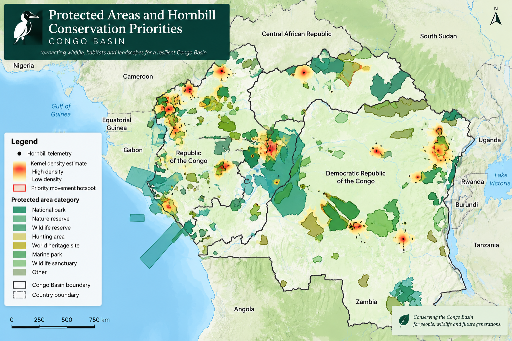
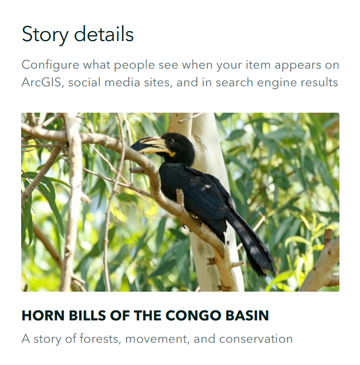
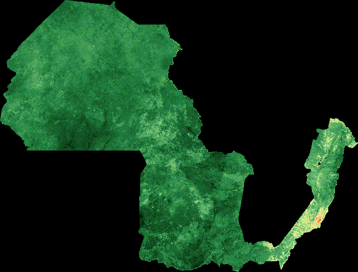

Hornbill Distribution Map
Mapping hornbill distribution and conservation priorities across the Congo Basin.
A collection of spatial analyses, environmental assessments, maps, and interactive visualizations..
Explore a selection of my GIS, remote sensing, and environmental analysis projects, including interactive dashboards, spatial analyses, maps, and research outputs. Each project shows how I use geospatial data and analytical tools to understand environmental and development challenges and support evidence-based decision-making.

Mapping hornbill distribution and conservation priorities across the Congo Basin.

A conservation story exploring forests, hornbill movement, and habitat priorities across the Congo Basin.

Satellite-based analysis of vegetation dynamics in Kahuzi-Biega National Park using NDVI time-series data.

Spatial analysis of elephant GPS telemetry data to examine movement patterns and areas of use.

Spatial analysis of whale shark telemetry data to identify movement patterns, core-use areas, and habitat use.

Spatial assessment of flood susceptibility across Bukavu, DRC, to support risk-informed planning.

Remote sensing analysis of land-use and land-cover change and its implications for environmental and agricultural planning.

I am a professional in the field of geospatial analysis and the environment, working at the point where GIS, remote sensing, conservation, and climate resilience meet. My experience has involved carrying out analysis of changes in forest cover, monitoring deforestation, and engaging in landscape-level planning in both the Democratic Republic of Congo and Uganda. Since I have a background in agronomy and natural resource management, I bring a solid understanding of land-use systems, the livelihoods of local communities, and ecological balance to my work with spatial analysis. I apply geospatial techniques both for mapping patterns and for helping to make practical, evidence-based decisions regarding biodiversity conservation and sustainable land management. I am especially interested in using GIS and remote sensing to address real-world conservation problems and in creating spatial projects that are clear and well documented so that the data can be turned into action.
For professional inquiries, collaborations, or project discussions, feel free to get in touch.

{kind=link}
{kind=link}
{kind=link}